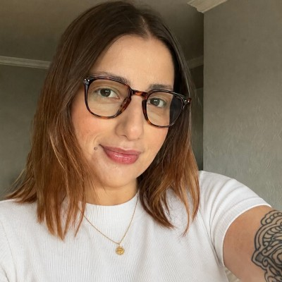

QA Engineer | Analista de Qualidade de Software | Cypress | Testes Manuais | Postman | JS | SQL
Sou Analista de QA com experiência prática em automação (Cypress), testes manuais, testes de API (Postman) e SQL básico. Atualmente começando a estudar Playwright.
Meu diferencial vem da minha base em análise de e-commerce, onde diariamente cruzo informações entre marketplaces e ERPs, valido essas integrações e SKUs para reduzir erros de estoque e informações de produtos, antecipando falhas de usabilidade e comunicando bugs com contexto real de impacto para o negócio.
Recentemente, apliquei esse mesmo raciocínio criando, com vibecoding, um sistema pra resolver divergências reais entre o estoque físico e o sistema da operação: analisei e levantei os requisitos, desenhei a lógica de negócio, testei cada cenário e encontrei e corrigi bugs ao longo do processo (ver projeto).
↓ BAIXAR CURRÍCULOApp interno de conferência diária de estoque cruzando vendas de Mercado Livre e Shopee com o ERP (7 mil produtos, 80 pedidos/dia). Levantamento de requisitos, análise de regras de negócio e validação de cada cenário.
→ PROJ_02 · TESTE MANUALTestes manuais end-to-end no fluxo de compra do Mercado Livre (login, busca, carrinho e checkout), com casos de teste documentados, bugs reportados e regras de negócio mapeadas.
→ PROJ_03 · AUTOMAÇÃOAutomação de testes com Cypress no sistema de RH OrangeHRM, cobrindo cenários positivos e negativos de login.